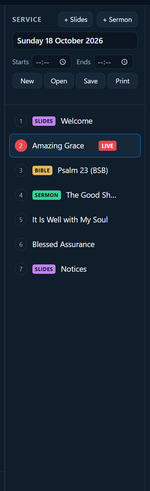
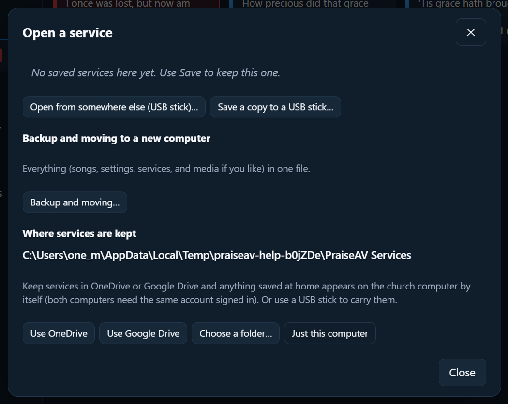

Pregătirea unui serviciu
Servicii
Un serviciu e ordinea a tot ce se întâmplă la o întâlnire: cântări, citiri, predica, videoclipuri, anunțuri. E a doua coloană a ferestrei.

Pregătirea unui serviciu
- Cântări: dublu clic în fila Cântări, sau trage-le. Vezi Cântări.
- Citiri biblice: din fila Biblia. Vezi Biblia.
- Predica: apasă + Predică. Vezi Predici.
- Diapozitivele tale: apasă + Diapozitive (anunțuri, un bun venit, un verset cu o imagine). Vezi Designerul de diapozitive.
- Videoclipuri, imagini, muzică, PowerPoint: din fila Media. Vezi Media.
Elementele noi intră imediat după cel selectat. Trage elementele ca să schimbi ordinea. Ca să scoți unul, du mouse-ul pe el și apasă ✕.
Fiecare element arată ce este: Biblia, Predica, Video, Muzică sau Diapozitive (cântările nu au etichetă).
Ora de început și de sfârșit
Sub nume, Începe și Se termină stabilesc când începe și când se termină serviciul. Ecranul adunării numără invers până la început, iar ecranul predicatorului arată cât a mai rămas. Vezi Mesaje pentru formație și predicator.
Salvarea
- Scrie un nume în partea de sus a coloanei Serviciu. PraiseAV propune data duminicii care vine.
- Apasă Salvează (sau apasă Ctrl+S).
Textul de sub butoane spune dacă e salvat. Salvează devine albastru când sunt schimbări încă nesalvate.
Deschiderea unui serviciu salvat
Apasă Deschide. Serviciile salvate apar în listă, cele mai noi primele. Apasă unul ca să-l deschizi.

Un serviciu salvat are propria copie a fiecărei cântări, așa că merge pe alt calculator chiar dacă acel calculator nu are cântările: se adaugă în biblioteca lui. Imaginile și videoclipurile nu sunt în fișier (pot fi mari). Dacă lipsește una, PraiseAV îți spune care.
Pregătește acasă, condu la biserică
Dosarul bisericii
Ține tot ce e al bisericii într-un singur dosar pe care îl vede fiecare calculator: în OneDrive, Google Drive sau Dropbox, sau un dosar partajat în rețeaua bisericii. Serviciile, cântările, media (fundaluri, logo-uri, videoclipuri, imagini, muzică și diapozitive PowerPoint) și configurarea bisericii merg toate acolo, așa că ce pregătești acasă e pe calculatorul bisericii de la sine.
- Apasă Deschide, apoi Dosarul bisericii….
- Apasă Folosește Dropbox, Folosește OneDrive sau Folosește Google Drive (pe care îl are acest calculator), sau Alege un dosar….
- PraiseAV spune ce va face. Pentru un dosar nou al bisericii, scrie numele bisericii. Apasă Folosește acest dosar.
- Fă la fel pe celălalt calculator. Găsește dosarul bisericii și oferă Alătură-te acestui dosar al bisericii.
Serviciile și media fiecărui calculator sunt copiate înăuntru. Nimic nu se mută sau se șterge, iar cântările pe care le au ambele calculatoare nu se dublează. Ambele calculatoare au nevoie de același cont OneDrive, Google Drive sau Dropbox conectat, sau de dosarul partajat cu amândouă.
Înăuntru, dosarul are Services, Songs, Media și Backups (o copie a copiei de siguranță automate săptămânale, ca să fie în siguranță chiar dacă se pierde calculatorul bisericii). Nu redenumi aceste dosare.
Păstrat pe acest calculator. OneDrive și Dropbox pot lăsa un fișier „doar online”, descărcându-l abia când e deschis, iar un videoclip care trebuie descărcat în mijlocul unui serviciu se blochează. Așa că PraiseAV marchează dosarul bisericii Păstrează întotdeauna pe acest dispozitiv. Google Drive nu are un astfel de comutator pentru aplicații: dă clic dreapta pe dosarul PraiseAV, apoi Acces offline › Disponibil offline (sau alege Oglindire fișiere în setările Google Drive). Gata pentru duminică? verifică dacă videoclipurile și imaginile serviciului sunt chiar pe calculator, iar Descarcă-le acum le aduce pe cele care nu sunt.
Loc pentru media. Înainte să folosească un dosar, PraiseAV verifică dacă acest calculator are loc să copieze media în el, și avertizează dacă media e mai mult decât încape într-un cont gratuit (Dropbox 2 GB, OneDrive 5 GB, Google Drive 15 GB).
Ca să oprești pe un calculator, apasă Nu-l mai folosi pe acest calculator… în aceeași fereastră. Serviciile și media lui sunt copiate înapoi pe el, cântările rămân în biblioteca lui, iar dosarul rămâne cum e pentru celelalte calculatoare.
Doar serviciile
La Mai multe opțiuni, în Deschide, poți ține doar serviciile în OneDrive, Google Drive sau alt dosar, fără cântări și media:
- Folosește OneDrive sau Folosește Google Drive: serviciile salvate acasă apar singure pe calculatorul bisericii, dacă ambele sunt conectate la același cont.
- Alege un dosar…: oriunde, de exemplu un dosar partajat.
- Doar acest calculator: înapoi la normal.
Cu un stick USB
- Salvează o copie pe un stick USB… salvează acest serviciu unde alegi.
- Deschide din alt loc (stick USB)… deschide un fișier de serviciu de oriunde.
Începerea unui serviciu nou
Apasă Nou. Dacă acesta are schimbări nesalvate, PraiseAV întreabă întâi. Cântările rămân în bibliotecă.